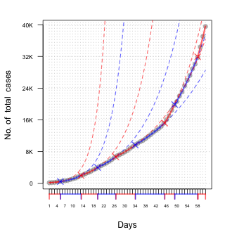

Felipe Osorio
News archive
COVID-19 discussion organized by SOCHE
June 24, 2020
"Algunos modelos no tan inútiles para el análisis del brote de
COVID-19 en Chile" talk as part of the series of presentations organized
by SOCHE
in order to massively disseminate the experience of national and international
researchers, as well as research groups, with regard to the analysis of data
on the COVID-19 virus pandemic.
For additional information, visit the website of SOCHE , [video]
COVID-19 outbreak in Chile
May 16, 2020
We analyzed data from the COVID-19 outbreak in Chile using the segmental
regression methodology for Poisson data with exponential growth as proposed
by Muggeo, Sottile and Porcu [doi: 10.13140/RG.2.2.32798.28485]. We have updated the
report made on April 15 with the latest information provided by the Ministry
of Science, Technology, Knowledge and Innovation. Our main finding is that
the number of days requested to double the number of cases of COVID-19 has
been reduced for the regions: Metropolitana, Coquimbo, Valparaíso,
O'Higgins and Biobío, as well as at the national level. The report
is available here: http://matematica.usm.cl/covid-19-en-chile
For the R codes visit the GitHub page .

Returns of the Chilean Pension System
May 10, 2020
During the 80s, the Chilean pension system underwent a reform that transformed
it into an individual capitalization system. The pension system structure is
based on freedom and individual responsibility, as well as free competition of
pension fund management companies (in Spanish: Administradoras de Fondos de Pensiones,
or AFP). In 2002, a new savings method was introduced. Now, each worker can choose
among five investment funds that are differentiated from one another by the proportion
of resources that are invested in variable income securities. Basically, AFPs have
concentrated these types of variable income securities in shares, mutual funds,
tradable certificates issued by foreign banks, and other financial instruments.
Currently, the improvement and inspection of Chile's pension system is a controversial
issue. For datasets and further reading, see my GitHub webpage
Important research group in spatial-temporal statistics gets consolidated at the USM
September 7, 2015
Following the International Seismic Conference, which brought together more
than 50 scientists from the fields of mathematics, statistics and the sciences
concerned with natural disasters, the spatial-temporal statistics research
group, made up of academics from the Department of Mathematics of the Universidad
Técnica Federico Santa María, Emilio Porcu and Ronny Vallejos,
has achieved significant results.
Read the complete news here
Enquiries to the National Institute of Statistics
May 4, 2013
Letter to the Director written in collaboration with Ronny Vallejos, Ph.D.
about the situation of the Chilean National Institute of Statistics (INE) .
Posted in the newspaper La Tercera on May 4, 2013. Letter: